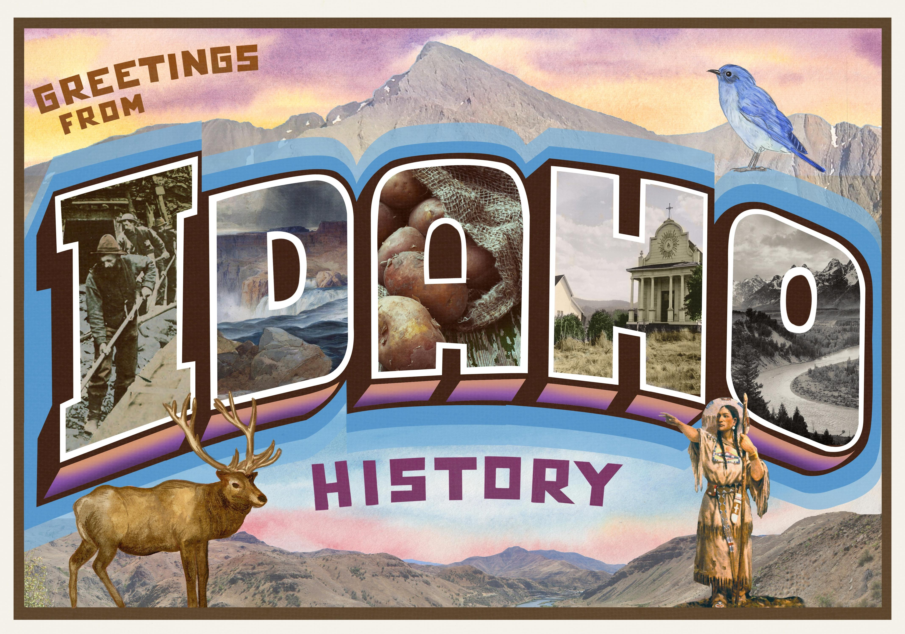
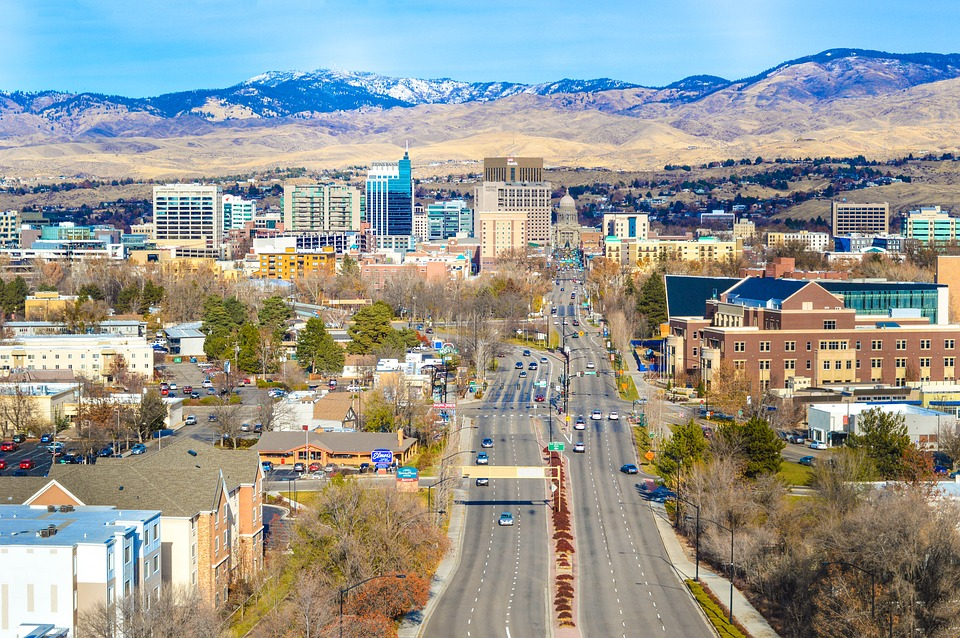

Ryan's Resume

As an aspiring finance professional, I am driven by a passion for understanding the intricate dynamics of global markets and a desire to make impactful decisions within the financial realm. Pursuing a finance program at Brigham Young University (BYU) is not merely a choice, but a strategic investment in my future. BYU's esteemed faculty, renowned for their expertise in finance, coupled with the university's commitment to fostering ethical leadership, align perfectly with my values and aspirations. I am eager to immerse myself in BYU's rigorous curriculum, leveraging its resources and opportunities to develop a solid foundation in finance, while also honing my analytical skills and strategic thinking. Ultimately, I aim to utilize my education and experiences at BYU to contribute meaningfully to the finance industry, driving positive change and making informed decisions that resonate on a global scale.
Education
- Things I enjoy
- Excercise
- Surfing
- Swing Dancing
- Hanging with friends
- Hiking
- Playing Football
- Scenic Drives
- Snow Canyon High School
- Utah Tech University
- Brigham Young University
- Skills
- Financial Analysis
- Communication
- Networking
- VBA
Top 10 Places in Idaho
Idaho beckons with a wealth of captivating destinations. Nature enthusiasts can explore the rugged beauty of the Sawtooth Mountains and the tranquil shores of Lake Coeur d'Alene. Thrill-seekers will find excitement on the Salmon River's whitewater rapids, while history buffs can immerse themselves in the Old West charm of Silver City. Sun Valley offers world-class skiing, while McCall provides a serene escape by Payette Lake. Boise's vibrant Farmers Market showcases the state's agricultural bounty, and Shoshone Falls mesmerizes with its natural splendor. Meanwhile, wine aficionados can savor the offerings of the Snake River Valley. With its diverse landscapes and rich heritage, Idaho promises unforgettable experiences for all who visit.
History of Idaho
Idaho's history is a tale of exploration, settlement, and resource exploitation. Native American tribes, such as the Nez Perce and Shoshone, inhabited the land long before European contact. The region witnessed an influx of pioneers during the 19th century, drawn by the promise of fertile valleys and abundant resources. The discovery of gold in the 1860s fueled rapid growth, leading to the establishment of Idaho Territory in 1863 and statehood in 1890. Throughout its history, Idaho's economy has evolved from mining and agriculture to include industries like timber and tourism. Today, the state continues to honor its heritage while embracing modern challenges and opportunities.

Best States in the U.S.
When considering the best states to live in the United States, several factors come into play, including quality of life, economic opportunities, education, healthcare, and natural beauty. Among the top contenders is Colorado, renowned for its breathtaking Rocky Mountain scenery, outdoor recreation opportunities, and vibrant cities like Denver and Boulder. Massachusetts stands out for its top-tier education system, world-class healthcare facilities, and rich cultural heritage, anchored by historic cities like Boston and Cambridge. Washington State boasts a robust economy driven by tech giants like Microsoft and Amazon, alongside stunning natural landscapes ranging from the Puget Sound to the Cascade Mountains. Minnesota earns high marks for its excellent healthcare, strong economy, and abundant outdoor activities, particularly in the Twin Cities area. Finally, New Hampshire offers a high quality of life with low crime rates, excellent schools, and picturesque landscapes, making it a perennial favorite among those seeking a balanced lifestyle. Whether drawn to the mountains, coastlines, or urban centers, these states offer a compelling mix of opportunities and amenities for residents to thrive.


Top of Page